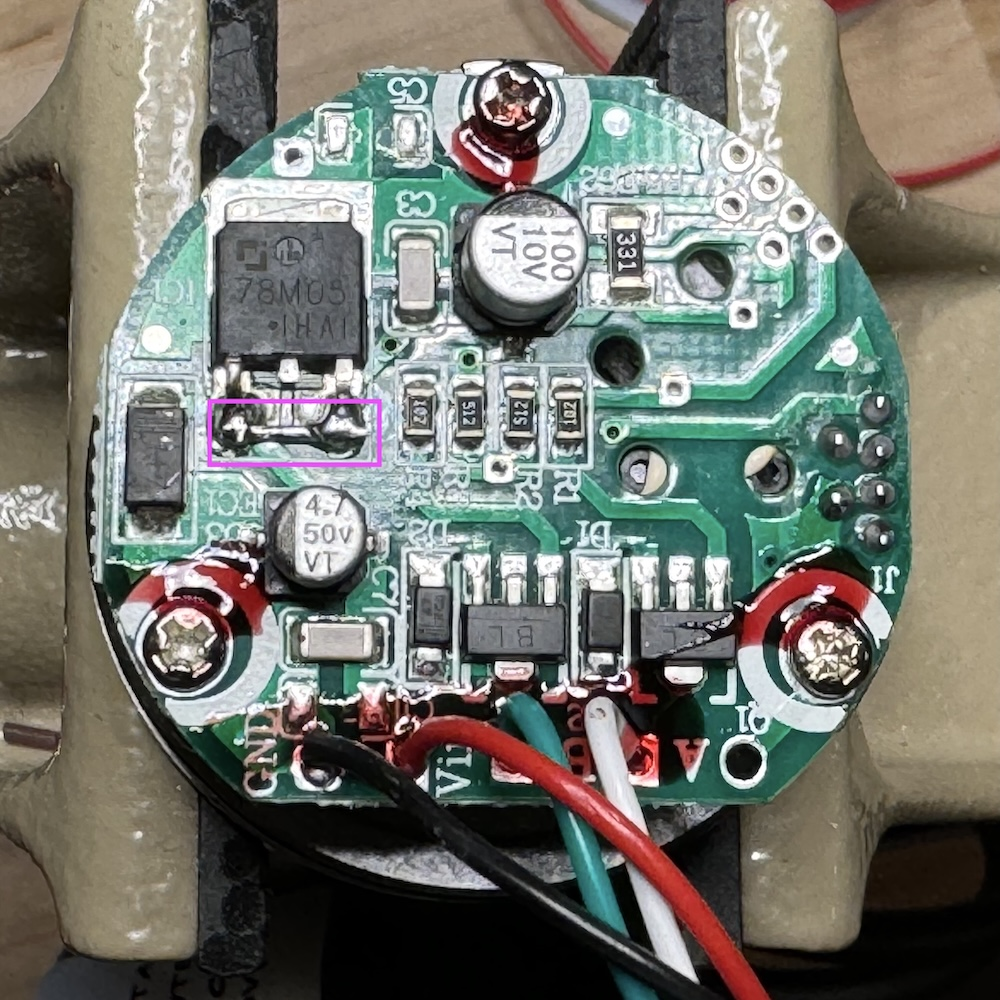

Loading...
Searching...
No Matches
TAISS Optical Encoders
TAISS Optical Encoders

These are a 2400 PPR (600 CPR) optical encoder with bearing supports and a 6mm shaft. They are available from Amazon.
Modifications
These are designed for input voltages from 7-24V, which are then stepped down to 5V with a 7805 regulator. To get them to run reliably on the 5V supplied by the stepdance module, you'll want to bypass the 7805 by shorting its input to its output: 
Connector
Here's how to wire the stepdance ENC1/ENC2 connector: